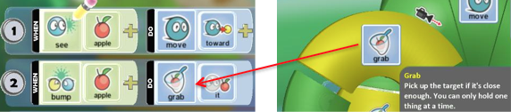

Learn how to use paint tools to create your own world.
To get started, watch the Add Terrain video and earn how to add terrain to your level using the keyboard and mouse.
Direct Link: Kodu Add Terrain
Learn how to avoid common coding mistakes by programming a cycle to find and eat apples.
Direct Link: Kodu Avoiding "Gotchas"
If you watched the video but need more practice, try the following:

Learn how to change the settings of different objects. Set them to move faster or slower, and to see or hear events at different distances. With the Object tool selected, you can Right-Click an object if you want to change its size, height, or other settings.
Click Change Settings and explore.